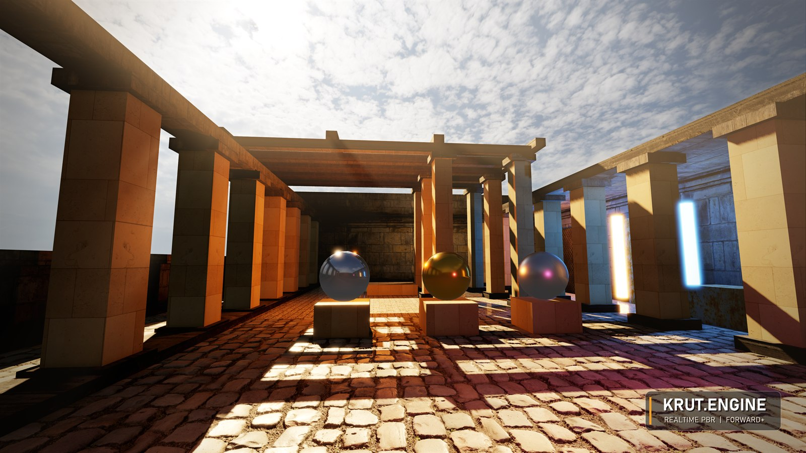

I'm William Eklund, a systems and game developer in Sweden working in C# and .NET: backend, cloud, networking, performance and game engines.
My largest project is Krut, a 3D game engine I build solo. Two games run on it so far, one of them an online racing game with a dedicated server and a backend. Below is what the engine does today, the games and backend built on it, and where it's going next.
C# 14 / .NET 10 · ASP.NET Core · PostgreSQL · Docker · Direct3D 12 or Vulkan · Native AOT · ~210k LOC engine (~350k+ total)
-lighttest, -capture) across Direct3D 12 and Vulkan.krut-cook), background JIT warmup, and Native AOT builds.
Every system (rendering, destruction, physics, audio, networking, AI, UI and asset cooking) is a
separate part that only knows about the others when it has to. A game includes the engine as a
git submodule, inherits from a shared Core loop and overrides the parts it wants to
change. Builds are Native AOT, so players don't need .NET installed, and every subsystem
has xUnit tests that must pass before anything ships.
Most of Krut is written by hand, by me. I use libraries for a few low-level pieces, listed further down, but the systems built on top of them are my own code.
The target is a modern, optimized game engine built on the old-school BSP workflow (like Quake, GoldSrc and the Source engine), with modern features like unified PBR, real-time and baked GI lighting, a tile + clustered Forward+ renderer, GPU compute VFX, and structural destruction.
Krut.Engine.Gpu), and input (input buffer, coyote-time queue, zoom-scaled sensitivity, raw gyro, aim assist). Menus, HUDs and dev tools run on Kui, my own GPU-accelerated retained UI (.kui/.kss documents, bindings, hot-reload, gamepad navigation, in-world UiSurface displays, and SecondaryView render-to-texture cameras). ImGui is optional.LightmapBaker) with directional lightmaps, one-bounce baked GI, decorrelated sky rays, and baked-light specular highlights (AmbientLobe); per-cluster box-projected reflection probes; height-blended AmbientColumn light probes for models and moving brush groups; LTC area lights (tubes, rectangles, disks); screen-space contact shadows; translucent shadow maps; and procedural spot light cookies.GpuParticleSystem simulates up to 131,072 compute particles with vector fields, curl turbulence, depth collision, GPU depth sort, and lit soft smoke and fire injected into the froxel fog. DecalVolumeRenderer clips 3D projective decals onto world geometry, joined by two-pass volumetric liquid blood decals (wet Fresnel, meniscus, growing pools, wall drips, edge-first drying) and per-part viewmodel gore stains on weapons and hands..cube LUT colour-grading zones, bokeh depth of field, wet-lens screen blood, explosion shockwave refraction rings and heat-haze distortion, chromatic aberration impulses, bloom, and live runtime quality cost tiers (r_tier: Low to Ultra).-driver d3d12|vulkan. Shaders are HLSL, compiled offline to DXIL and SPIR-V with live shader hot-reload and PSO cache pre-warming.func_destructible Voronoi-fractured walls with interior lightmap sampling, blast chipping, static support checks, and CollapseCells structural cascade releases; breakable glass panes (FuncGlass) and compound rigid bodies (BreakableBody). Swept capsule character controller (CharacterMotor) over a custom triangle BVH, Jitter2 rigid bodies, ragdolls with threading hysteresis, and JointManager constraints (hinges, ball-sockets, sliders, springs).func_water volumes (Gerstner waves with a CPU buoyancy twin, Beer-Lambert absorption, refraction, SSR, procedural caustics, underwater waterline and swimming), chunked quadtree CDLOD heightmap terrain with PBR height-blend splatting, GPU-instanced wind foliage, Rayleigh/Mie CelestialSky, and a dynamic weather state machine with surface wetness.SampleCover), Perception (view cone × line-of-sight × player irradiance query plus an acoustic NoiseBus), and allocation-free BehaviorTree agents with typed blackboards..bank dependency) with an explicit mixer hierarchy, 3D spatial rolloff, raycast acoustic occlusion (per-voice low-pass and gain), env_reverb_zone room reverb, DSP chains, and beat/bar-synced InteractiveMusic with stem cross-fades.krut-cook offline asset cooker (BC1–BC7 KTX2 textures, cooked meshes and animation curves, collision and navmesh caches), AES-256-GCM encrypted assets.pak archives, texture mip streaming, mesh LOD/HLOD, world cell software occlusion, crash reporter with minidumps, and a deterministic golden-capture regression runner (-lighttest, -capture, -hidden).
Libraries: SDL3 / ppy.SDL3-CS (window, input and SDL_GPU), Jitter2 (rigid-body physics), DotRecast (navmesh generation
and pathfinding), LiteNetLib (UDP transport), FMOD Core 2.03 (sound playback and mixing), NVorbis (Ogg decoding), AssimpNetter (FBX/glTF import),
Sledge.Formats (.map/.bsp parsing), StbImageSharp (image decoding), ImGui.NET (optional debug UI), xUnit (tests).
An authoritative-server netcode library for .NET built on LiteNetLib, extracted from Krut.Racing. It handles the low-level synchronization and prediction primitives needed to keep multiplayer games responsive and fair over noisy, high-latency internet connections.
The library is decoupled from any specific engine or physics model: games define their own messages, snapshots and simulation step, while Krut.Netcode manages the wire protocol, clock synchronization, client prediction rollbacks, entity interpolation and simulated network degradation.
NetDataReader/NetDataWriter with object pooling — steady-state packet processing generates 0 B of garbage collection allocations.KRUT_NET_* environment variables) to test and prove resilience under adverse conditions.System.Numerics, and ships with xUnit tests, BenchmarkDotNet suites, and a headless multi-client prediction demo.Commute started as a 10-minute playable vertical slice for Krut.Engine 1.8 (Subway Station, available on itch.io) and now serves as the flagship showcase and test bed for Krut.Engine 3.2, rebuilt around a photoreal full-PBR pipeline, heavy procedural combat VFX, and structural destruction.
Every world surface, prop, character and first-person weapon rig uses the engine's unified PBR path, while every combat effect — smoke, fire, sparks, craters, scorch marks and blood — is generated procedurally in code at startup with no external FX texture packs.
func_destructible) shatter into jagged concrete pieces with rough-concrete interiors, baked light on loose chunks, debris chips that slide off standing ledges, and procedural steel rebar that bends or snaps across the hole. A support graph over walls, pillars, ceilings and glass is flood-filled on damage so unsupported roofs and upper floors collapse in a staggered cascade with creaks, dust and camera shake (showcased in the generated destructible Villa map and Devmap).F) shoves enemies, breaks multi-plank crates (BreakableBody), and kicks locked physics doors off their hinges.NoiseBus, closed doors and crates dynamically carve the navmesh (enemies open or kick down locked doors in their way), and live 3D CCTV cameras stream onto shootable in-world UiSurface monitors.A spec racer: every car performs exactly the same. You can change how your car looks and sounds, but not how it drives. The server enforces this, because clients never touch vehicle parameters.
The car physics is my own vehicle sim, written for this game: a kinematic simcade model with a friction ellipse, weight transfer, anti-roll, suspension, downforce, drafting and FWD, RWD or AWD drivetrains. It runs on a fixed step, so the same code runs headless on a dedicated server per race, and clients only send their inputs. The netcode is built to keep racing smooth at pings of 150-200 ms (see Krut.Netcode).
The game server is authoritative for the race, and the backend is authoritative for everything that outlives it. Clients never report their own results: when a race ends, the dedicated server builds the result from its own state, signs it with HMAC-SHA256 and hands it to the backend, which verifies the signature before anything is stored or paid out.
Since Krut 2.0.0 (2026-10-26), the engine has progressed to Krut 3.2, shipping the planned
froxel volumetric fog and light shafts, 131k GPU compute particles, LTC area lights, contact shadows,
Voronoi wall fracture and structural collapse, volumetric liquid decals and viewmodel gore, behavior-tree AI
with dynamic navmesh carving, Gerstner water and CDLOD terrain, the Kui retained GPU UI, and the
krut-cook asset pipeline.
You can reach me by email at williameklund2@gmail.com, or find me on LinkedIn and GitHub.